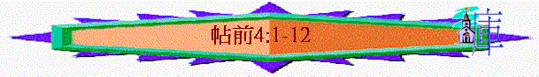

|
信仰的堅立與勉勵 |
|
|
信仰的堅定 |
生活的勉勵 |
|
1-3 |
4-5 |
二.生活的勉勵(4:1-5:22)
「弟兄們，我還有話說：我們靠著主耶穌求你們，勸你們，你們既然受了我們的教訓，知道該怎樣行可以討 神的喜悅，就要照你們現在所行的更加勉勵」4:1
「你們向馬其頓全地的眾弟兄固然是這樣行，但我勸弟兄們要更加勉勵」4:10
「打發我們的兄弟在基督福音上作 神執事的提摩太前去，堅固你們，並在你們所信的道上勸慰你們，」3:2
「所以，你們當用這些話彼此勸慰」4:18
〜「更加勉勵」有極其富裕，增加，使東西增多及使人大大得到的意思
,新譯本譯「更進一步」
〜「勸勉」有鼓勵，敦促，安慰及鼓舞意思
〜保羅想藉此書鼓勵信徒在過往所知的真理及所行的美事上，更加努力追求，使信仰及生命更豐富及無可指摘，在世可安然等候主回來
1.更加勉勵的原因(4:1)
「好使你們當我們主耶穌同他眾聖徒來的時候，在我們父 神面前，心裏堅固，成為聖潔，無可責備。」3:13
「弟兄們，我還有話說：我們靠著主耶穌求你們，勸你們，你們既然受了我們的教訓，知道該怎樣行可以討 神的喜悅，就要照你們現在所行的更加勉勵」4:1
A.主的再來
〜4:1原文有「所以」為開始，因為主會與眾聖徒回來，所徒應該在生活上更加努力，成為聖潔，安然見主
B.神僕請求
〜「求你們」----有請求、要求意思，「勸你們」----有呼籲、勉勵意思
C.已受教訓
〜信徒已領受了神僕的教訓
D.已知怎行
〜他們也知怎樣行可討悅神，因此既已有真理的根基，他們在生活上可以更加好，得神喜悅
2.更加勉勵的內容(4:2-5:22)
A.在聖潔生活上更加勉勵(4:2-8)
a.主的命令
「你們原曉得，我們憑主耶穌傳給你們甚麼命令」4:2
「因為經上記著說：「你們要聖潔，因為我是聖潔的。」」彼前1:16
「你們要追求與眾人和睦，並要追求聖潔；非聖潔沒有人能見主。」來12:14
〜4:2----此句之前有「因為」字
〜從舊約至新約，信徒也曉得神的命令是要屬神的人聖潔
〜因為有主的命令，所以我們生活上更要聖潔起來
b.神的旨意
「神的旨意就是要你們成為聖潔，遠避淫行；」4:3
〜「命令」----是絕對要服從指令及規條意味，而「旨意」----則是神的意願(will)，將命令的本意陳明
〜神的心意如下
(1)信徒成為聖潔
「就如 神從創立世界以前，在基督裏揀選了我們，使我們在他面前成為聖潔，無有瑕疵；」弗1:4
〜「聖潔」----有成聖，歸聖的意思，神的心意是要我們分別為聖
(2)信徒禁戒淫行
「你們要逃避淫行。人所犯的，無論甚麼罪，都在身子以外，惟有行淫的，是得罪自己的身子。」林前6:18
〜「遠避」----原來有自絕於、禁戒意恩
〜「淫行」----賣淫、不貞、通姦的事
〜神的心意要我們成聖，如何成聖？要禁戒及遠離淫亂的事
〜而羅馬時代，認為「貞潔」是一種不合理的束縛，婚前性行為是平常的事
c.生活表現
(1)謹守身體
「要你們各人曉得怎樣用聖潔、尊貴守著自己的身體，」4:4
「人若自潔，脫離卑賤的事，就必作貴重的器皿，成為聖潔，合乎主用，預備行各樣的善事。」提後2:21
〜「曉得」----信徒應該知道、注意到
〜「守著」----獲得、得到成為自己擁有(possess)
〜「身體」----容器
〜原來信徒在生活中要主動使自己成為容器，如提後2:21所說成為合用器皿，是自己擁有的
〜我們要努力守住這容器，不使牠歸於魔鬼、情慾及世界的，如何使這「容器」不屬於他人/世界？
(A)用聖潔守著
〜要用神的聖潔守著，要分別出來歸神為聖
(B)用尊貴守著
〜「尊貴」----有價值、尊榮，要看自己為有尊榮，不作卑賤的事，持守著尊貴的身份
(2)不縱情慾
「不放縱私慾的邪情，像那不認識 神的外邦人。」4:5
〜「放縱私慾」----有嚮往、渴望、貪慾意思
〜「邪情」----激情(強烈的渴望)
〜信徒不要效法外邦人，貪求激情，放縱私慾
(3)不越界線
「不要一個人在這事上越分，欺負他的弟兄；因為這一類的事，主必報應，正如我預先對你們說過、又切切囑咐你們的。」4:6
「不可貪戀人的房屋；也不可貪戀人的妻子、僕婢、牛驢，並他一切所有的。」出20:17
〜「這事」----可能指前文的放縱私慾的事情
〜「越分」----超過、逾過、犯罪意思
〜「欺負」----佔便宜、剥削、欺騙意思
〜信徒在生活中不作越軌的事，特別是弟兄之配偶，不要有越分思想與為行為，佔弟兄便宜，令弟兄家庭受虧損
〜否則神會報應越分的肢體們
d.神的召命
「神召我們，本不是要我們沾染污穢，乃是要我們成為聖潔。所以，那棄絕的，不是棄絕人，乃是棄絕那賜聖靈給你們的 神。」4:7-8
「我說，你們當順著聖靈而行，就不放縱肉體的情慾了。因為情慾和聖靈相爭，聖靈和情慾相爭，這兩個是彼此相敵，使你們不能做所願意做的。」加5:16-17
(1)原來的召命
〜神當初召我們從世界中分別出來，就是要我們不沾染污穢的事，成為聖潔
〜這是祂起初的原意
(2)棄絕的不敬
〜人棄絕聖潔，不守著自己身體，不是棄絕人的吩咐，乃是棄絕神當初的召命，是將神放在一邊，不理祂的命令、祂的心意，神也賜聖靈給人，叫人不放縱情慾的！
B.在相愛生活上更加勉勵(4:9-10)
a.已有的表現
「論到弟兄們相愛，不用人寫信給你們；因為你們自己蒙了 神的教訓，叫你們彼此相愛。你們向馬其頓全地的眾弟兄固然是這樣行，但我勸弟兄們要更加勉勵。」4:9-10
〜「論到弟兄們相愛」----論到兄弟姐妹手足之愛意思，此處指是基督徒彼此之間的愛
(1)已蒙神教訓
〜他們已知主教訓，也領受了並學習彼此相愛
(2)向弟兄施愛
〜帖撒羅迦教會已向馬其頓眾弟兄顯出愛，不是單領了教訓，更有行動的
b.更加的勉勵
〜「但我勸弟兄們要更加勉勵」---既然已顯出愛心，就在彼此相愛上更加努力，不要停留及滿足現有的光景
C.在工作上更加勉勵(4:11-12)
「又要立志作安靜人，辦自己的事，親手做工，正如我們從前所吩咐你們的，叫你們可以向外人行事端正，自己也就沒有甚麼缺乏了。」4:11-12
「因我們聽說，在你們中間有人不按規矩而行，甚麼工都不做，反倒專管閒事。我們靠主耶穌基督吩咐、勸戒這樣的人，要安靜做工，吃自己的飯。」帖後3:11-12
a.現在的勉勵
〜「安靜人」----有不受打擾、靜默不語意思
〜可能回應帖後3:11-12有些人信主後，甚麼工不作，專管閒事，所以保羅勸他們不要搬弄是非、作安靜的
〜也要親手作工，辦自己的事，不是管別人的事
b.從前的吩咐
〜「端正」----合宜、確地的意思
〜保羅從前吩咐他們叫他們手作工，目的如下:
(1)別人看出信徒行事正確----人看到信徒不是遊手好閒，乃是作正經事。
(2)在生活中可以沒有缺乏----信徒也不累教會，可親手作工，使自己無缺乏。